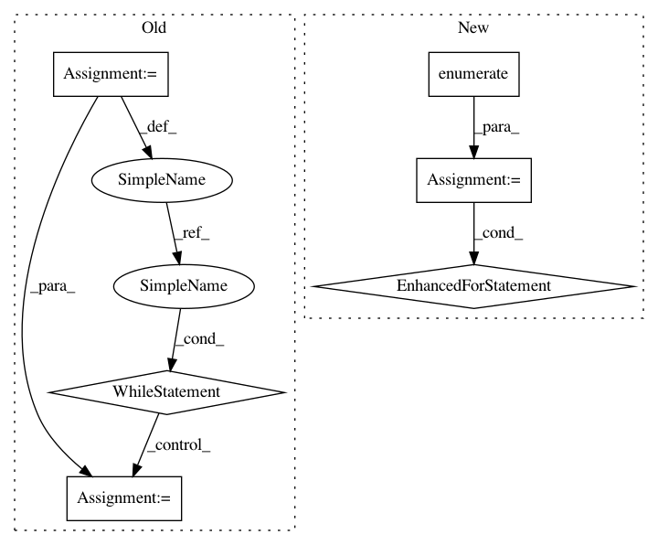

13a85e08e713f374933bc4fc082f67e1fa8dcd02,deepvariant/util/io_utils.py,,read_shard_sorted_tfrecords,#Any#Any#Any#Any#Any#,377
Before Change
else:
paths = [path]
heap = []
for path in paths:
it = (
proto.FromString(buf)
for buf in python_io.tf_record_iterator(path, options))
heap.append(_ComparableSortedRecordIterator(it, key))
heapq.heapify(heap)
i = 0
while heap:
i += 1
if max_records is not None and i > max_records:
return
nextit = heap[0]
yield nextit.value
nextit.advance()
// Because nextit.advance() mutates the first entry in the heap, the heap
// invariant may not be satisfied at this point. If the iterator is exhausted
// we should just pop it off. Otherwise, we call heapreplace and replace the
// item with itself, since this triggers the check to efficiently fix the
// heap invariant in this case where just the top element may not satisfy it.
if nextit.exhausted:
heapq.heappop(heap)
else:
heapq.heapreplace(heap, nextit)
def write_tfrecords(protos, output_path, options=None):
Writes protos to output_path.
This function writes serialized strings of each proto in protos to output_path
After Change
for buf in python_io.tf_record_iterator(path, options))
keyed_iterables.append(((key(elem), elem) for elem in protos))
for i, (_, value) in enumerate(heapq.merge(*keyed_iterables)):
if max_records is not None and i >= max_records:
return
yield value
def write_tfrecords(protos, output_path, options=None):
Writes protos to output_path.
This function writes serialized strings of each proto in protos to output_path
In pattern: SUPERPATTERN
Frequency: 3
Non-data size: 6
Instances
Project Name: google/deepvariant
Commit Name: 13a85e08e713f374933bc4fc082f67e1fa8dcd02
Time: 2018-02-20
Author: cym@google.com
File Name: deepvariant/util/io_utils.py
Class Name:
Method Name: read_shard_sorted_tfrecords
Project Name: hellohaptik/chatbot_ner
Commit Name: 8ddf7bf7b977640e61bb6113186f165748f214a8
Time: 2017-11-07
Author: jain.chirag925@gmail.com
File Name: lib/nlp/regex.py
Class Name: Regex
Method Name: text_substitute
Project Name: hellohaptik/chatbot_ner
Commit Name: c81fafd9c93e90babeab6b0c7321ee88163955ab
Time: 2018-04-18
Author: jain.chirag925@gmail.com
File Name: ner_v1/chatbot/entity_detection.py
Class Name:
Method Name: output_entity_dict_list